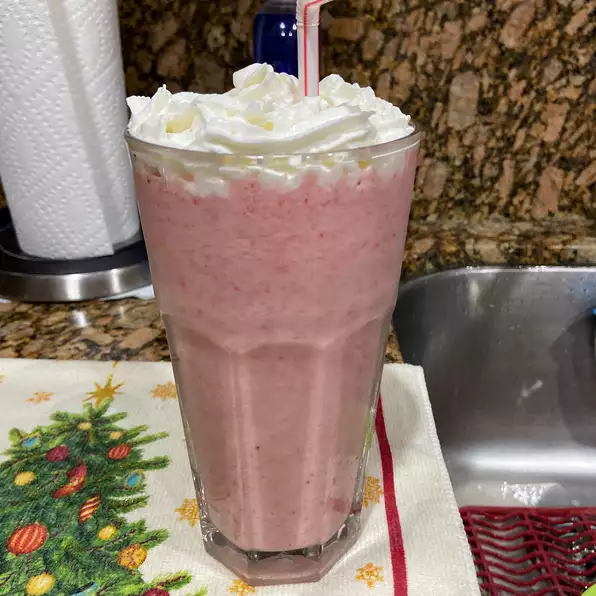

B and L's Strawberry Smoothie

Description
You'll love this icy cold strawberry smoothie.
Ingredients
- 8 strawberries, hulled
- ½ cup skim milk
- ½ cup plain yogurt
- 3 tablespoons white sugar
- 2 teaspoons vanilla extract
- 6 cubes ice, crushed
Steps
-
Step 1
In a blender combine strawberries, milk, yogurt, sugar and vanilla.
Toss in the ice. Blend until smooth and creamy. Pour into glasses and serve.